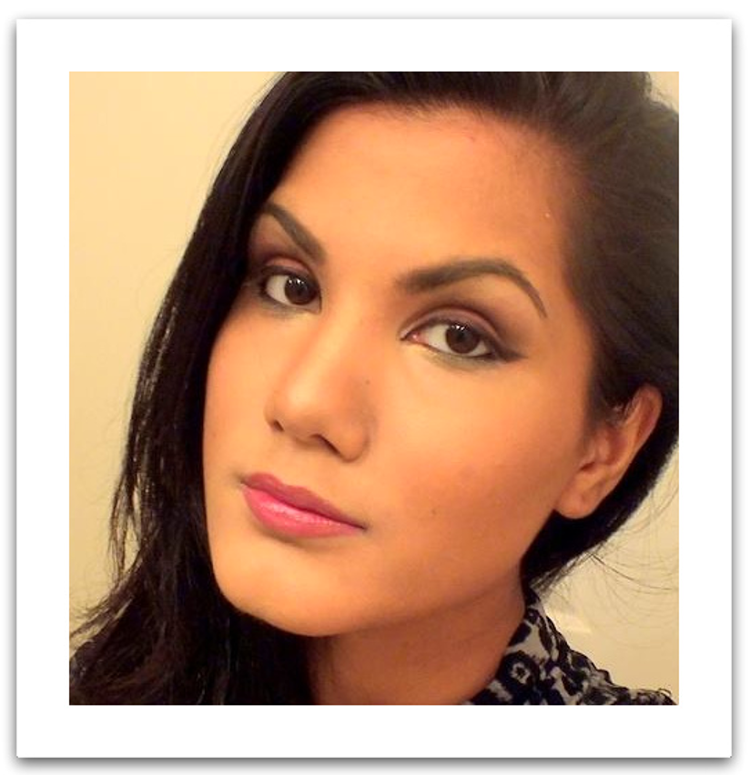

Our Team
Aly Husseinzadah

Aly Husseinzadah comes to Group 3R from York University’s English and Professional Writing Program. She chose project 3R because she has a passion for stories and was excited to enrich her knowledge of literature by researching and learning about non-colonial and non-linear story forms. During the project she has lots of fun engaging with her team about non-linear stories, and sharing some of her writing and literature knowledge. She also had lots of fun coding the team’s website. Outside of university Alaha enjoys improving her sewing skills, playing the role of esthetician with her sister and mother, and re-visiting movies; her favourite movies to revisit are Legally Blonde and Steel Magnolias.
Kristen Buckley
Aly Husseinzadah comes to Group 3R from York University’s English and Professional Writing Program. She chose project 3R because she has a passion for stories and was excited to enrich her knowledge of literature by researching and learning about non-colonial and non-linear story forms. During the project she has lots of fun engaging with her team about non-linear stories, and sharing some of her writing and literature knowledge. She also had lots of fun coding the team’s website. Outside of university Alaha enjoys improving her sewing skills, playing the role of esthetician with her sister and mother, and re-visiting movies; her favourite movies to revisit are Legally Blonde and Steel Magnolias.
Austin Lyang
Aly Husseinzadah comes to Group 3R from York University’s English and Professional Writing Program. She chose project 3R because she has a passion for stories and was excited to enrich her knowledge of literature by researching and learning about non-colonial and non-linear story forms. During the project she has lots of fun engaging with her team about non-linear stories, and sharing some of her writing and literature knowledge. She also had lots of fun coding the team’s website. Outside of university Alaha enjoys improving her sewing skills, playing the role of esthetician with her sister and mother, and re-visiting movies; her favourite movies to revisit are Legally Blonde and Steel Magnolias.
Rachel Clodman
Aly Husseinzadah comes to Group 3R from York University’s English and Professional Writing Program. She chose project 3R because she has a passion for stories and was excited to enrich her knowledge of literature by researching and learning about non-colonial and non-linear story forms. During the project she has lots of fun engaging with her team about non-linear stories, and sharing some of her writing and literature knowledge. She also had lots of fun coding the team’s website. Outside of university Alaha enjoys improving her sewing skills, playing the role of esthetician with her sister and mother, and re-visiting movies; her favourite movies to revisit are Legally Blonde and Steel Magnolias.
Iqra Osman
Aly Husseinzadah comes to Group 3R from York University’s English and Professional Writing Program. She chose project 3R because she has a passion for stories and was excited to enrich her knowledge of literature by researching and learning about non-colonial and non-linear story forms. During the project she has lots of fun engaging with her team about non-linear stories, and sharing some of her writing and literature knowledge. She also had lots of fun coding the team’s website. Outside of university Alaha enjoys improving her sewing skills, playing the role of esthetician with her sister and mother, and re-visiting movies; her favourite movies to revisit are Legally Blonde and Steel Magnolias.
Shibli Sajeed
Aly Husseinzadah comes to Group 3R from York University’s English and Professional Writing Program. She chose project 3R because she has a passion for stories and was excited to enrich her knowledge of literature by researching and learning about non-colonial and non-linear story forms. During the project she has lots of fun engaging with her team about non-linear stories, and sharing some of her writing and literature knowledge. She also had lots of fun coding the team’s website. Outside of university Alaha enjoys improving her sewing skills, playing the role of esthetician with her sister and mother, and re-visiting movies; her favourite movies to revisit are Legally Blonde and Steel Magnolias.